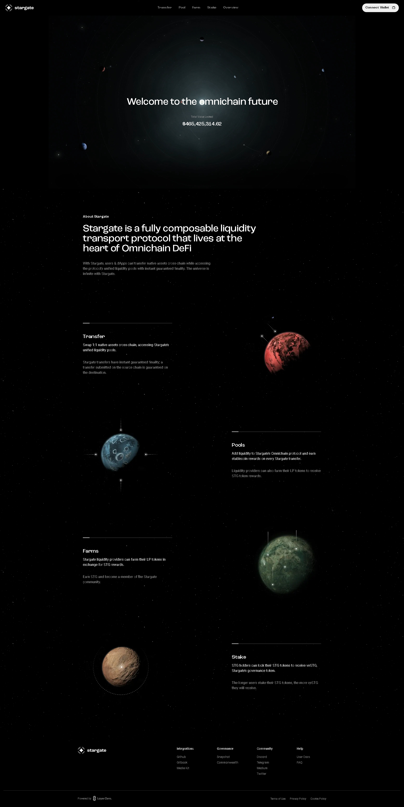

About Stargate
Stargate is a fully composable liquidity
transport protocol that lives at the
heart of Omnichain DeFi
With Stargate, users & dApps can transfer native assets cross-chain while accessing
the protocol’s unified liquidity pools with instant guaranteed finality. The universe is
infinite with Stargate.
Transfer
Swap 1:1 native assets cross-chain, accessing Stargate’s unified liquidity pools.
Stargate transfers have instant guaranteed finality; a transfer submitted on the source chain is guaranteed on the destination.
Transfer
Pools
Add liquidity to Stargate’s Omnichain protocol and earn stablecoin rewards on every Stargate transfer.
Liquidity providers can also farm their LP tokens to receive STG token rewards.
Pools
Farms
Stargate liquidity providers can farm their LP tokens in exchange for STG rewards.
Earn STG and become a member of the Stargate community.
Farms
Stake
STG holders can lock their STG tokens to receive veSTG, Stargate’s governance token.
The longer users stake their STG tokens, the more veSTG they will receive.
Stargate Pool
Add liquidity to Stargate’s omnichain protocol and earn stablecoin rewards on every Stargate
transfer. Liquidity providers can also farm their LP tokens to receive STG token rewards.
Stargate Farm
Stargate liquidity providers can farm their LP tokens in exchange for STG rewards.
Earn STG and become a member of the Stargate community.
Stargate Stake
Lock your STG tokens to receive veSTG, the unit of Stargate governance voting power.
Stargate is governed entirely by Stargate token holders via voting escrow.